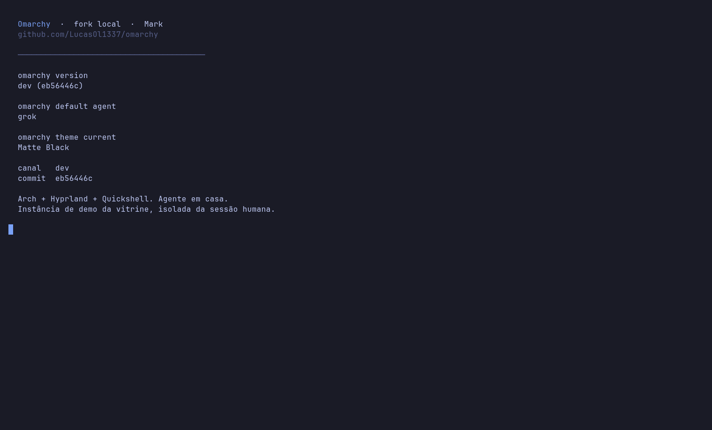
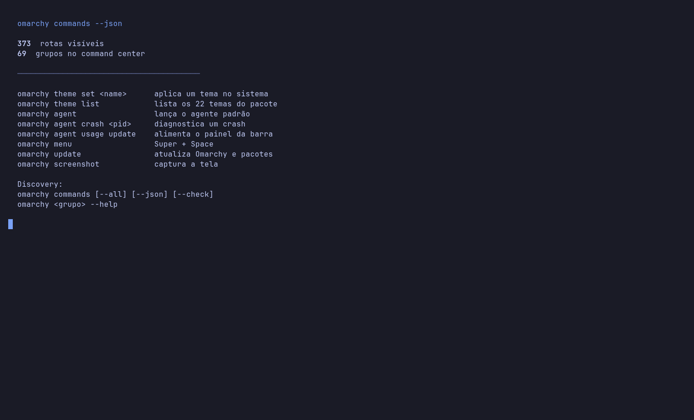
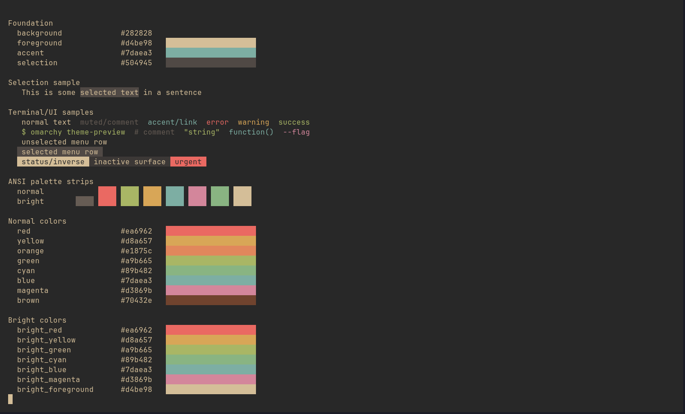
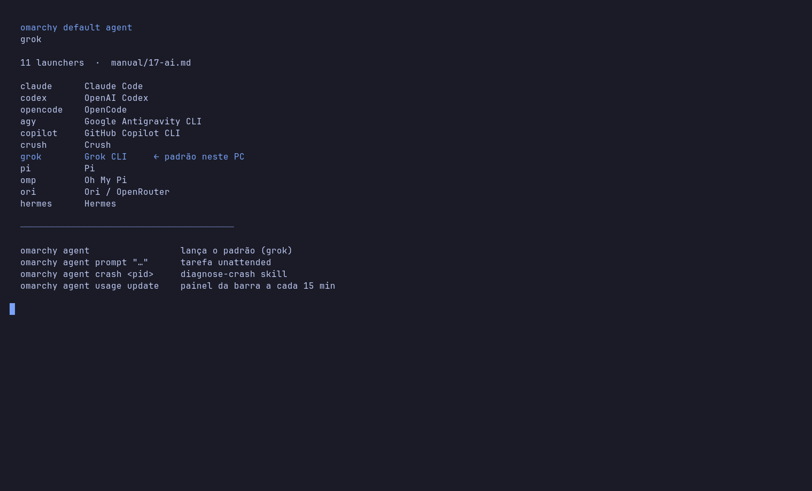

Fork local · Mark · não é omarchy.org
Esta página mostra o Omarchy que roda neste PC: o fork LucasOl1337/omarchy, Arch + Hyprland + Quickshell, com o Grok como agente padrão. Não é o site oficial da distro.
Narração: Lucas Oliveira, OFICIAL #1 · OmniVoice local · watermark invisível desligado
11 launchers no menu. Neste PC o padrão é o Grok. Crash vira diagnóstico. O uso aparece na barra.
373 rotas visíveis no command center. Menu, tema, plugin e agente. Super + Space abre o resto.
22 temas no pacote. Um comando acerta terminal, barra, notificação e wallpaper.
Não é um app. É o desktop. A vitrine gravou o CLI real do fork, numa bancada isolada, sem tocar na sessão humana.
ISO oficial do Omarchy instala Arch, Hyprland e Quickshell. Este repo é o $OMARCHY_PATH do Mark.
omarchy no terminal. Grupos, ajuda, JSON. 373 rotas visíveis neste commit.
omarchy default agent devolve grok. Super+Shift+Ctrl+A lança. Crash abre o diagnose-crash.
omarchy theme set pinta o sistema. omarchy-dev-theme-preview mostra a paleta no terminal, ao vivo.
Quatro telas da instância de demo, 15 de setembro de 2026. Nada simulado na edição.
Versão dev (eb56446c), canal dev, tema atual Matte Black, agente padrão grok. Hostname do sistema é lol; Mark é o nome da máquina.
Fonte: omarchy version, omarchy default agent, omarchy theme current, omarchy-channel-current na demo isolada.

O roteador omarchy lista as rotas visíveis em JSON. Neste commit: 373 comandos, 69 grupos. Theme, agent, menu, update, screenshot.
Fonte: omarchy commands --json em 15/09/2026, HEAD eb56446c. Contagem dos grupos: seção Groups de omarchy.

omarchy-dev-theme-preview aplica a paleta no terminal via OSC. Tokyo Night, Matte Black, Gruvbox, Kanagawa, Rose Pine, Catppuccin. Um omarchy theme set pinta o desktop inteiro.
Fonte: diretório themes/ deste repo (22 temas). A lista da máquina inclui também Aether, tema de usuário em ~/.config/omarchy/themes.

Claude, Codex, OpenCode, Antigravity, Copilot, Crush, Grok, Pi, Oh My Pi, Ori e Hermes. Neste PC o default é grok. Crash vira omarchy agent crash. O painel da barra atualiza o uso a cada 15 minutos.
Fonte: tabela em manual/17-ai.md; omarchy default agent = grok; help de omarchy agent.

Tudo lido deste checkout em 15 de setembro de 2026. Sem arredondar pra marketing.
Versão do arquivo version: 4.0.0.alpha. omarchy version neste tree: dev (eb56446c). Licença MIT, copyright David Heinemeier Hansson. Fonte da narração: perfil OmniVoice 04b04ba5 (Lucas Oliveira, OFICIAL #1), watermark invisível off.
Comparação datada. Este fork acompanha a linhagem quattro; não substitui o site nem a ISO oficiais.
| Este fork no Mark | Omarchy oficial | Arch vanilla | |
|---|---|---|---|
| O que é | Checkout LucasOl1337/omarchy rodando como $OMARCHY_PATH | Distro Arch + Hyprland + Quickshell, “beautiful, fun & agentic Linux by DHH” | Base rolling-release, você monta o resto |
| ISO | Este repo não publica ISO | Omarchy 4.0.3 em iso.omarchy.org | archiso |
| Agente padrão | grok neste PC | o usuário escolhe no first boot | nenhum |
| Launchers de agente | 11, tabela do manual | os mesmos, mais apps no menu Install > AI | você instala na mão |
| Crash → agente | omarchy agent crash + skill diagnose-crash | “Make sense of a crash” em omarchy.org | coredumpctl na mão |
| Temas no pacote | 22 em themes/ | 22 listados no site em 15/09/2026 | DIY |
| Command center | 373 rotas visíveis neste commit | mesma linhagem quattro | pacman + wiki |
| Licença | MIT | MIT | mistura (kernel GPL) |
Fontes em 15/09/2026: omarchy.org (ISO 4.0.3, temas, crash, first-boot do agente); github.com/omacom/omarchy (41.066 stars no próprio site); archlinux.org; este checkout eb56446c e manual/17-ai.md. O site oficial lista também Muse na faixa de agentes; o manual deste tree tabela 11 launchers de CLI.
O botão da página aponta pro repositório. Não tem release binária porque isto não é um app pra baixar: é o tree do desktop.
# o $OMARCHY_PATH do Mark
git clone https://github.com/LucasOl1337/omarchy.git
# ISO 4.0.3, omarchy.org em 15/09/2026 https://iso.omarchy.org/omarchy-4.0.3.iso